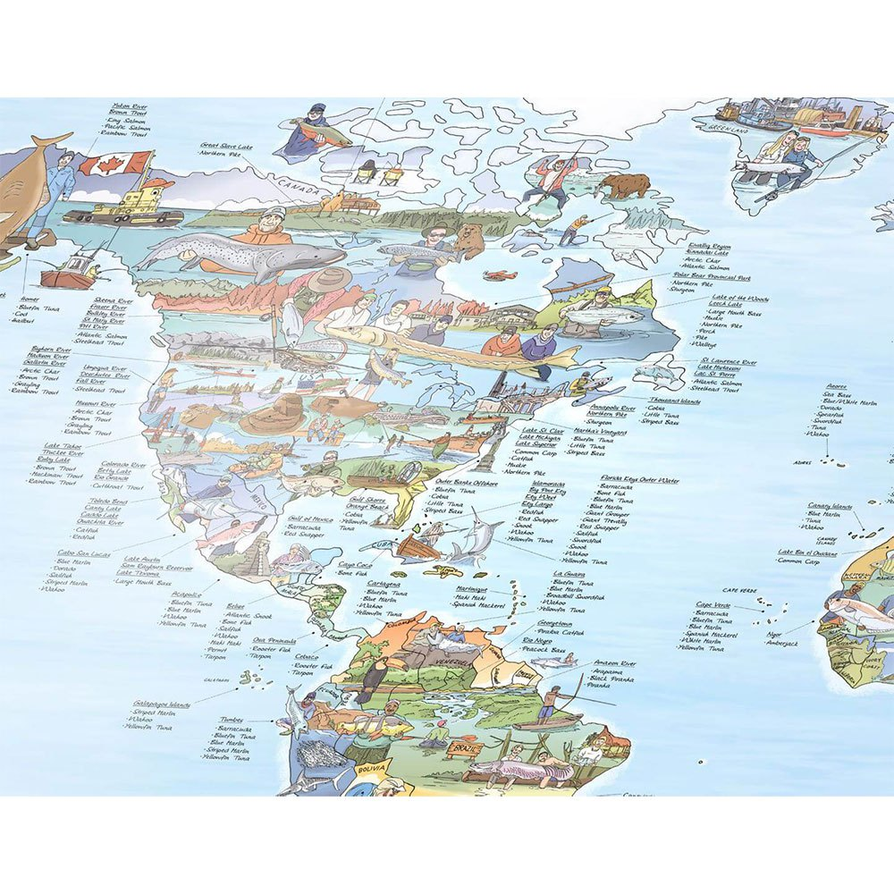

Home Page
Best Fishing Equitment
Fishing Lures
Best Fishing Spots
Great Barrier Reef, Australia. Best for: Black Marlin.
Florida Keys, USA. Best for: Tarpon, Bonefish, and Permit.
Alta River, Norway. Best for: Atlantic Salmon.
Los Cabos, Mexico. Best for: Marlin and Tuna.
Sekong River, Laos.
Lake Taupo, New Zealand.
Ascension Bay, Mexico.
